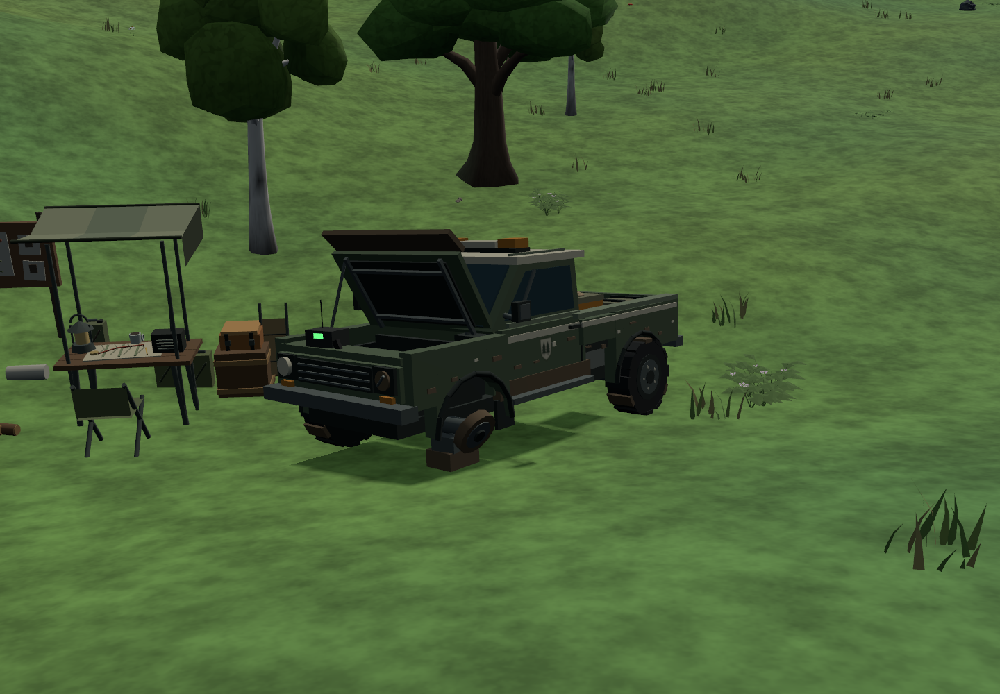

Dead-Wave · Wilderness search and rescue
The search party left this behind.
A stranded forestry pickup and a search camp, abandoned before the PGB arrived.

The radio is still on its last channel, resting on the remaining front lip. The rescue gear and search desk remain, but the truck is visibly out of service.